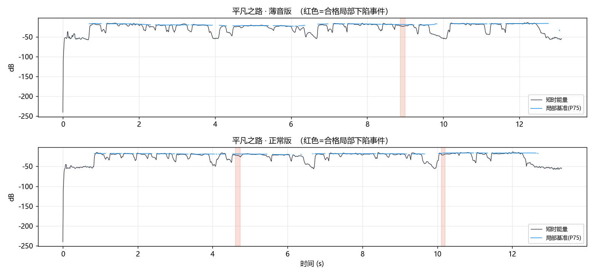
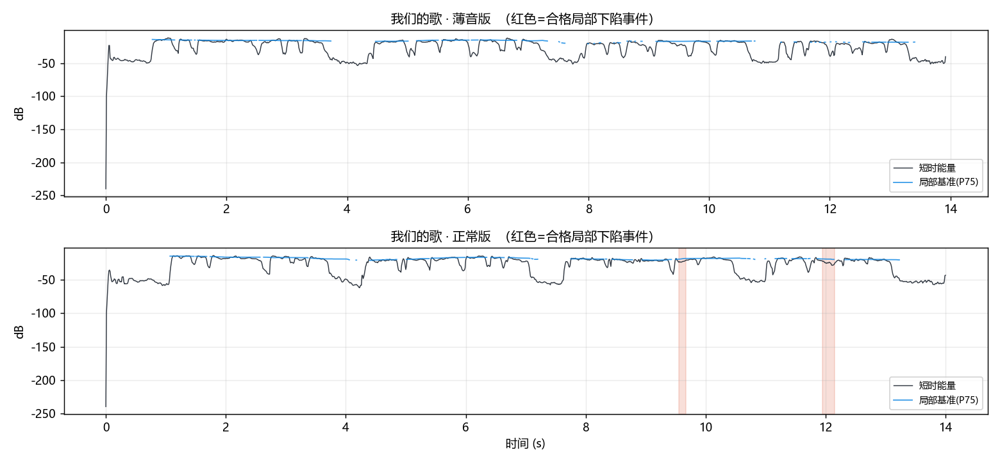
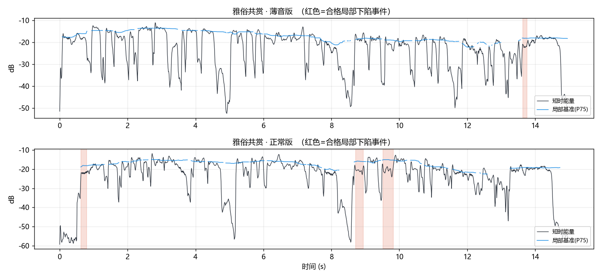
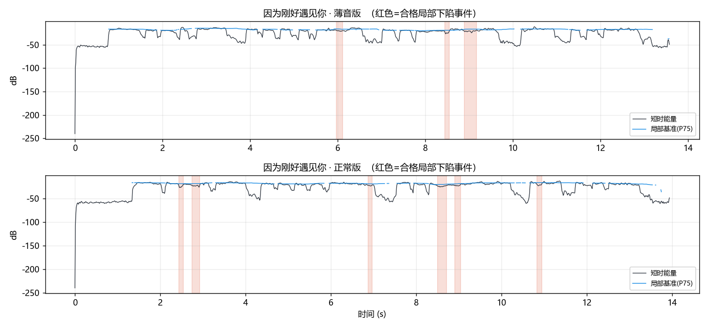

| 曲目 | 尺度 | 中等下陷频率（次/分） | 深度下陷频率（次/分，>12dB） | 下陷时间占比 | 浊音帧下陷 P90（dB） | 对齐相关 | ||||||||
|---|---|---|---|---|---|---|---|---|---|---|---|---|---|---|
| 薄 | 正常 | 差 | 薄 | 正常 | 差 | 薄 | 正常 | 差 | 薄 | 正常 | 差 | |||
| 平凡之路 | local | 5.91 | 12.23 | -6.32 | 35.43 | 12.23 | +23.2 | 0.109 | 0.071 | +0.04 | 13.63 | 11.33 | +2.3 | 0.993 |
| 平凡之路 | phrase | 11.81 | 0.0 | +11.81 | 35.43 | 18.35 | +17.08 | 0.133 | 0.058 | +0.08 | 14.36 | 11.79 | +2.57 | 0.993 |
| 我们的歌 | local | 0.0 | 12.11 | -12.11 | 49.88 | 30.27 | +19.61 | 0.141 | 0.129 | +0.01 | 17.06 | 21.22 | -4.16 | 0.987 |
| 我们的歌 | phrase | 0.0 | 12.11 | -12.11 | 49.88 | 30.27 | +19.61 | 0.15 | 0.129 | +0.02 | 17.14 | 22.22 | -5.08 | 0.987 |
| 雅俗共赏 | local | 4.71 | 15.45 | -10.74 | 61.18 | 25.75 | +35.43 | 0.18 | 0.156 | +0.02 | 16.43 | 8.22 | +8.21 | 0.951 |
| 雅俗共赏 | phrase | 9.41 | 25.75 | -16.34 | 61.18 | 30.9 | +30.28 | 0.227 | 0.212 | +0.02 | 16.59 | 8.22 | +8.37 | 0.951 |
| 因为刚好遇见你 | local | 15.9 | 32.23 | -16.33 | 58.3 | 37.6 | +20.7 | 0.256 | 0.201 | +0.05 | 22.55 | 21.78 | +0.77 | 0.991 |
| 因为刚好遇见你 | phrase | 21.2 | 26.86 | -5.66 | 58.3 | 37.6 | +20.7 | 0.246 | 0.246 | +0.0 | 22.15 | 22.02 | +0.13 | 0.991 |
| 指标 | 同向对数 | 中位差值（薄−正常） | 正/负 |
|---|---|---|---|
| events_per_min | 4/4 | -11.43 | 0/4 |
| deep_dip_count_per_min | 4/4 | +21.95 | 4/0 |
| dip_event_max_median_db | 2/3 | -0.7 | 1/2 |
| dip_event_max_p90_db | 3/3 | -1.2 | 0/3 |
| dip_time_fraction | 4/4 | +0.03 | 4/0 |
| dip_mean_all_voiced_db | 3/4 | +0.3 | 3/1 |
| dip_p90_all_voiced_db | 3/4 | +1.53 | 3/1 |
| voiced_energy_sd_db | 3/4 | -0.1 | 1/3 |
| 指标 | 同向对数 | 中位差值（薄−正常） | 正/负 |
|---|---|---|---|
| events_per_min | 3/4 | -8.88 | 1/3 |
| deep_dip_count_per_min | 4/4 | +20.16 | 4/0 |
| dip_event_max_median_db | 2/2 | -1.65 | 0/2 |
| dip_event_max_p90_db | 1/2 | -1.9 | 1/1 |
| dip_time_fraction | 3/4 | +0.02 | 3/0 |
| dip_mean_all_voiced_db | 3/4 | +0.23 | 3/1 |
| dip_p90_all_voiced_db | 3/4 | +1.35 | 3/1 |
| voiced_energy_sd_db | 3/4 | -0.1 | 1/3 |



